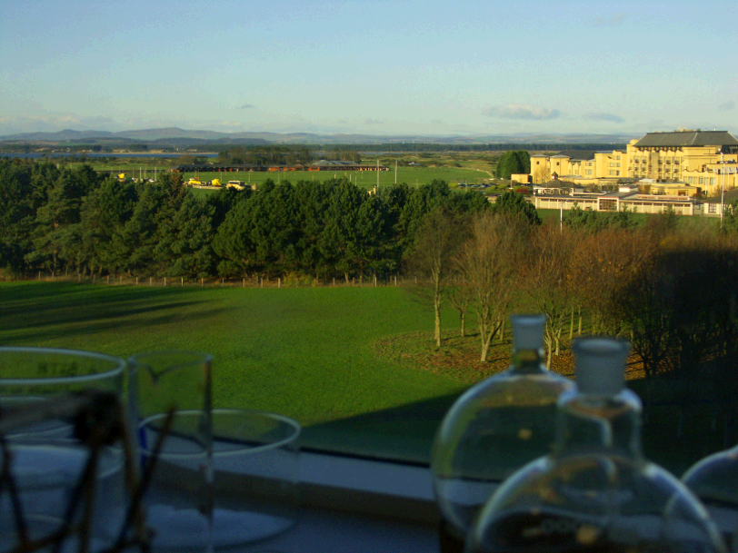

Schottland-Fotos
Das malerische Städtchen Tayport

Nebel auf der Taybrücke.
Wo die Leute einigermaßen gut situiert sind, sind auch die Pferde nicht weit.
Ich hoffe, das Pferd hat's schön warm dort im Schatten, aber ich fürchte nicht!
lustige Hausnummer...

Yes!!! Two Doubledykes!!!!

Das Bild hat sich so schlecht komprimieren lassen, weil man sonst die vielen Büffel nicht mehr sieht.

Ausblick aus dem Labor. Das Golfhotel kommt weder in zeitlicher noch finanzieller Hinsicht in Betracht.

Ausblick aus dem Labor, weiter nach rechts. Zu sehen ist alles potentielles Überschwemmungsgebiet bei Sturmfluten.
Tank für flüssigen Stickstoff. Steht nur leider in einem sehr kleinen Raum und die Türen da hinten sind die einzigen Ausgänge aus den jeweiligen Räumen. Hier ist auch die einzige Notdusche.
Die Kirche wird in der Nacht höchst spektakulär beleuchtet, allerdings nicht hell genug, um vom Bus aus ein Foto davon zu machen.
Zwischen Edinburgh und Fife wird gerade noch eine Brücke gebaut.
Ey den ICE ey!!!
Ey hat's GESCHRAMMT ey!!!